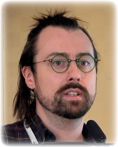

Managing pages outside of the direct map
a pagetable library for the kernel". During the actual memory-management-track session, though, he stated that the idea had "
fizzled" and he was going to cover related topics instead. What resulted was a session on ways to efficiently manage pages that are not present in the kernel's direct map.
The direct map makes the system's entire physical address space available within the kernel's virtual address space (on 64-bit systems, anyway). That allows the kernel to access any memory location in the system without having to set up any mappings first. The direct map is fast and convenient, but it also makes it easy for the kernel to access memory in unwanted ways, either as the result of a bug, a speculative-execution vulnerability, or some sort of compromise. There can, thus, be significant security benefits to be had by removing memory containing sensitive data from the direct map.

One of those pieces is allowing the allocation of unmapped (meaning, not in the direct map) memory. The developers of the Firecracker virtualization manager, he said, have been trying various ways of unmapping guest memory from the host's direct map, but the results have not performed well. He had proposed a set of memory-allocator changes to provide a new allocation flag, __GFP_UNMAPPED, to request memory that is not present in the direct map. Implementing that flag requires adding some new infrastructure to make this allocation more efficient than it is with current kernels. The changes are significant and possibly controversial; he warned the group (with a smile) that David Hildenbrand would merge those change if developers didn't review them.
Specifically, the series changes the existing "migration type" concept, which is used now to separate allocations that can be moved from those that cannot. Migration types would be replaced with a "freetype", which includes additional attributes about a block of memory — including whether that block is currently present in the direct map. That would allow the removal of blocks of memory in bulk from the direct map for use in quickly satisfying __GFP_UNMAPPED allocation requests.
The problem with removing memory from the direct map, though, is that the kernel can no longer access that memory (that being the point of the removal, after all), and sometimes the kernel needs to do exactly that. Zeroing pages at allocation time, implementing system calls like read(), handling copy-on-write faults, and populating guest_memfd memory are all examples of times when the kernel has a legitimate need to access memory. Jackman's answer to that problem is an in-kernel construct that he calls the "mermap"; it would allow pages to be mapped briefly into the kernel's address space so that an operation could be performed.
Mermap mappings are CPU-local; only the CPU that requests the mapping can make use of it. It is a lot like kmap_local_page(), but that function still makes mappings visible to all CPUs, which the mermap does not. Another difference is that the mermap is able to map multiple pages at a time. It also, crucially, is allowed to fail.
There are some other hazards associated with using __GFP_UNMAPPED. To improve performance, the mermap does not perform a TLB flush after an ephemeral mapping is removed; that can leave stale TLB entries around. Those entries could, conceivably, be used to access the memory after it unmapped; they will be flushed before the address is mapped again, though, so there is no risk of getting the wrong memory contents. He is considering requiring allocator users to perform a TLB flush before freeing the pages; otherwise those pages could be reused elsewhere while the stale TLB entries remain in place. Overall, he thinks that this is not the best API, and is interested in suggestions on how to improve it.
Liam Howlett suggested hooking the mermap into the lockdep checker, which is normally concerned with detecting locking bugs, as a way of detecting code that frees ephemerally mapped pages without a corresponding TLB flush. Matthew Wilcox wondered whether the scoped resource-management primitives could be used to ensure, at compile time, that TLB flushes happen when pages are freed. The problem with that approach is that pages are allocated and freed in different scopes, so the problem does not fit that model. David Hildenbrand asked whether having the "TLB flush needed on free" status tracked with pages themselves would help; Jackman said that it would, but that would require a page flag, and those are in perennially short supply.
Jackman's final question for the group was whether the use of a GFP flag was appropriate. There is a push to move memory allocation away from GFP flags in general, so adding another one might not be welcome. In this case, all that is really needed is a way to get the "unmapped" bit into the page allocator. Hildenbrand suggested adding a new allocation context, but Jackman said that the need for unmapped memory is a property of the data to be stored therein, rather than of the context in which the kernel is running at the moment.
At that point, time ran out and the session came to a close. Jackman has
posted his own
summary of the session, along with a pointer to his
slides.
| Index entries for this article | |
|---|---|
| Kernel | Memory management/Address-space isolation |
| Kernel | Memory management/Direct map |
| Conference | Storage, Filesystem, Memory-Management and BPF Summit/2026 |